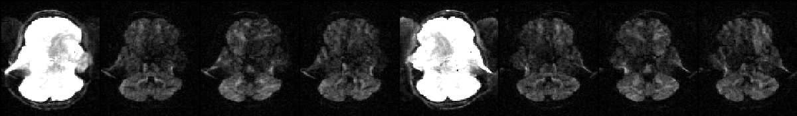

Contents
- Introduction
- Users Guide
- FAQ
Running eddy
Not yet written
List of parameters
- Parameters that specify input files
--imain=filename
Name of a file with input images. E.g. all_my_images.nii. Compulsory.--mask=filename
Name of a file with mask specifying brain vs no-brain. E.g. my_brain_mask.nii. Compulsory.--acqp=filename
Name of text file with information about the acquisition of the images in --imain. E.g. my_scan_pars.txt. Compulsory.--index=filename
Name of text file specifying the relationship between the images in --imain and the information in --acqp and --topup. E.g. index.txt. Compulsory.--bvecs=filename
Name of text-file with normalised diffusion gradients. Compulsory.--bvals=filename
Name of text-file with b-values. Compulsory.--session=filename
Name of text-file with. Optional.--topup=filename
Name of output from a previous topup run. Should be the same as the argument given to topup's --out. Optional.
- Parameters specifying names of output-files
--out=basename
Basename for output-files. The corrected images will be named "basename".nii.gz. Compulsory.
Parameters specifying how eddy should be run
--flm=linear/quadratic/cubic
Spatial model for the field generated by eddy currents. Default quadratic.--fwhm="fwhm in mm"
Filter width to use for pre-filtering of data for the estimation process. Default 0.--niter="required number of iterations"
Specifies how many iterations should be run. Default 5.--resamp=jac/lsr
Currently not working. Should always be left at default (jac).--repol
Currently not working. Should never be used.--verbose
Print progress information to the screen while running. Can be useful to pipe into file before reporting problems--help
Take a wild stab.
Parameters explained
--imain
Should specify a 4D image file with all your images acquired as part of a diffusion protocol. I.e. it should contain both your dwis and your b=0 images. If you have collected your data with reversed phase-encode blips, data for both blip-directions should be in this file.
--mask
Single volume image file with ones and zeros specifying brain (one) and no-brain (zero). Typically obtained by running BET on the first b=0 image. If you have previously run topup on your data I suggest you run BET on the first volume (or the average of all volumes) of the --iout output and use that.
--acqp
A text-file describing the acquisition parameters for the different images in --imain. The format of this file is identical to that used by topup (though the parameter is called --datain there).
--index
A text-file that determines the relationship between on the one hand the images in --imain and on the other hand the acquisition parameters in --acqp and (optionally) the subject movement information in --topup. It should be a single column (or row) with one entry per volume in --imain. We will use a small (simplified) example to make it clear.

The image above shows a selected slice from each of the eight volumes in --imain. The associated --acqp file is
-1 0 0 0.051
1 0 0 0.051
which specifies that phase-encoding is performed in the x-direction, sometimes traversing k-space left->right (-1) and sometimes right->left (1). Finally the --index file is
1 1 1 1 2 2 2 2
which specifies that the first four volumes in --imain were acquired using the acquisition parameters on the first row (index 1) of the --acqp file, and that volumes 5--8 were acquired according to the second row (index 2).
--bvecs
A text file with normalised vectors describing the direction of the diffusion weighting. This is the same file that you would use for FDT.
--bvals
A text file with b-values () describing the "amount of" diffusion weighting. This is the same file that you would use for FDT.
--out
Specifies the basename of the output. Let us say --out="basename". The output will then consist of a 4D image file named <basename>.nii.gz containing all the corrected volumes and a text-file named <basename>.eddy_parameters with parameters defining the field and movement for each scan.
--topup
This should only be specified if you have previously run topup on your data and should be the same name that you gave as an argument to the --out parameter when you ran topup.
--session
As part of the modelling eddy attempts to tease apart transformations caused by i) eddy currents, ii) subject movements and iii) gradient heating. As part of that eddy needs to know when the scanner has been stopped and started, i.e. if data has been collected in a single session or not.
If we take the example above (for --index) as an example also for this you can see that the data in --imain has been collected with two different sets of acquisition parameters (first four with one, and final four with another).
I happen to know that these are also two different "sessions", i.e. the scanner we stopped after the first four scans, and then started again to collect the next four. Therefore in this case the index file would look like
1 1 1 1 2 2 2 2
To indicate that the first four images were acquired in one session and the remaining four in another. It so happens that for this example the --session file is identical to the --index file, but this is not generally true.
N.B. At the moment specifying --session will not make any difference to the corrected images (<basename>.nii.gz). It will only change <basename>.eddy_parameters, and that will be of no interest to most users. Hence you may find it more convenient to not specify --session.
N.B. 2 The comment above may become invalid in the future if/when we start to model the eddy currents at a "second level", in which case it will be crucial to assign the transformations to the correct cause.
--flm
--fwhm
--niter
--resamp
--repol
--verbose